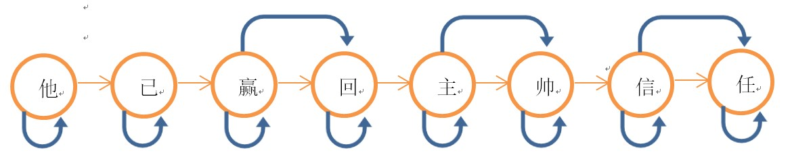
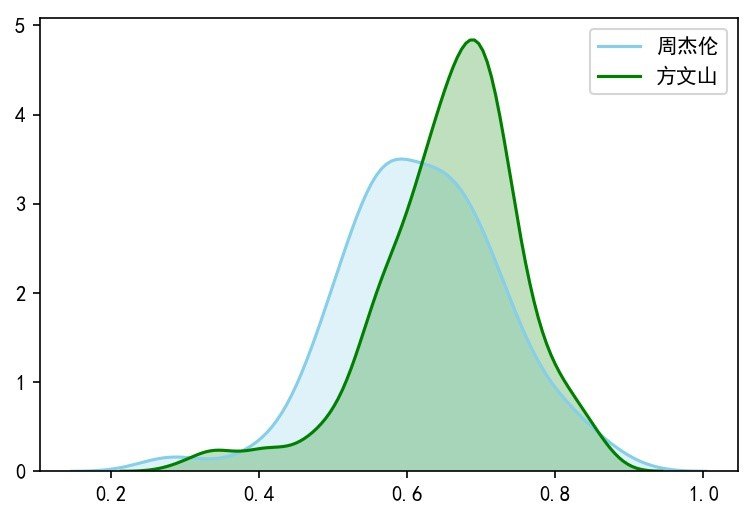

基于文本挖掘分析作词异同点
-- 张雅淇、郭培莹、黄斌
数据获取： 爬虫网易云音乐
构思潜在问题
歌曲重复/歌曲串烧
无歌词——纯音乐
未被平台收录
同歌名不同歌
流程图——爬虫
IP被百度封杀
解决：动态IP拨号服务器
IP被百度封杀
中文乱码问题
例：\xa3\xa0、\xa4\x57
r. encoding = r. apparent_encoding
从内容中分析出的响应内容编码方式
中文乱码问题
歌手姓名不匹配
康晋荣（康康）|Selina（任家萱）
歌手姓名不匹配
版权歌曲无法搜索
手动搜索并导入
版权歌曲无法搜索
“创作”的意义
包含作词&作曲
爬取结果：
方文山作词歌曲271首，
周杰伦作词歌曲118首。
分词和去停用词、词性标注
分词原理——jieba工具
1用正则表达式将中文段落粗略的分句
2构造有向无环图，寻找最佳切分方案
3对于连续的单字，用HMM模型划分
有向无环图（DAG）
隐马尔可夫模型——HMM
生成肖像词云

词性频率对比
词性分类对比
形容词
名词

动词
成语
地名
季节
情感分析对比
预测公式

简化为：
改写为：
情感极性分布

情感分数分布
核密度估计

文本分类
基于SVM的文本分类
TF-IDF介绍
Loading model cost 0.746s
测试集准确率达到了74.36%
测试集准确率达到了74.36%
基于textCNN的文本分类
选用基础的LeNet-5卷积神经网络训练
迭代结果如下：
Accuracy：
79.5%*
*平均f1-score：75%深度学习优于传统的数学模型方法
感谢大家的收看！
基于文本挖掘分析作词异同点
-- 张雅淇、郭培莹、黄斌